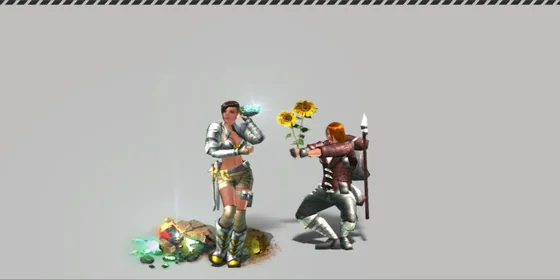
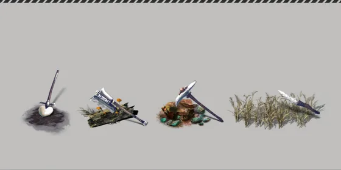

หน้าแรก › เก็บของและคราฟต์
การเก็บของ ใช้ได้
เก็บพืช ไม้ หิน แร่ และแล่ซากสัตว์ — เลเวลของที่ได้ โอกาสสำเร็จ เครื่องมือที่ต้องใช้ และเวลาที่ของกลับมา
ทุกอย่างบนเกาะเริ่มจากการเก็บ — กิ่งไม้ ใบไม้ หิน แร่ จนถึงหนังและเนื้อจากซากสัตว์ ของที่เก็บได้มี เลเวล ติดมาด้วย ยิ่งเลเวลสูง ของที่คราฟต์ต่อก็ยิ่งดี และบางชิ้นอาจมี คุณสมบัติแฝง ติดมาด้วย

เก็บอะไรได้บ้าง
- พืช — ใบไม้ ผลไม้ ดอกไม้ ต้นกก เห็ด ฯลฯ ส่วนใหญ่ใช้มือเปล่าได้
- ไม้ — กิ่งและเปลือกไม้ใช้มือเปล่าได้ · ท่อนไม้จากต้นใหญ่ต้องใช้ขวานหรือเลื่อย
- หินและแร่ — หินก้อนใหญ่ แร่ อัญมณี ต้องใช้อีเต้อหรือค้อน
- ดิน — มือเปล่าหรือพลั่ว
- ซากสัตว์ — ล่าสัตว์แล้วแล่เอาหนัง เนื้อ กระดูก (หมวดสกิล การแล่เนื้อ) ดู สัตว์
- สิ่งปลูกสร้างที่ให้ของ — เช่น บ่อน้ำหรือลอบ เก็บของได้เป็นรอบ ๆ ดู สิ่งปลูกสร้าง
วิธีเก็บ
- เดินเข้าไปใกล้ของที่ต้องการ (ห่างไม่เกิน 3 ไทล์) แล้วแตะ
- เมนูจะแสดงรายการของที่เก็บได้จากจุดนั้นพร้อม เลเวลที่จะได้จริง
- เลือกรายการ — เกมเลือกเครื่องมือที่เหมาะให้เอง ถ้าไม่มีเครื่องมือที่ใช้ได้ รายการจะเป็นสีเทา
- รอหลอดเวลาจนเต็ม แล้วดูผลที่ขึ้นมา: สำเร็จ · ความสำเร็จแบบไร้ที่ติ · หรือ เก็บล้มเหลว
- ถ้าพลังงานเหลือน้อย เกมจะถามก่อนว่าจะทำต่อหรือไม่
- ของบางหมวดต้องเรียนสกิลก่อนถึงจะเก็บได้ — แตะแล้วเกมจะเปิดหน้าสกิลที่ต้องเรียนให้
เครื่องมือที่ต้องใช้ ใช้ได้

| ของที่เก็บ | เครื่องมือที่ใช้ได้ |
|---|---|
| แร่ / อัญมณี | อีเต้อ · ค้อนมือเดียว · ค้อนสองมือ |
| หินก้อนใหญ่ | อีเต้อ · ค้อนมือเดียว · ค้อนสองมือ |
| ท่อนไม้จากต้นใหญ่ | ขวานงานช่าง (มือเดียว/สองมือ) · เลื่อย · เลื่อยไฟฟ้า |
| กิ่ง / เปลือกไม้ | มือเปล่า · มีด · ขวานงานช่างมือเดียว |
| ดิน | มือเปล่า · พลั่ว |
| อื่น ๆ | มือเปล่า · มีด |
กฎเลเวลเครื่องมือ: เครื่องมือต้องมีเลเวล เท่ากับหรือสูงกว่าเลเวลของแหล่ง (ของธรรมชาติ = เลเวลเกาะ · ซากสัตว์ = เลเวลสัตว์) เช่น แร่บนเกาะเลเวล 35 ต้องใช้อีเต้อเลเวล 35 ขึ้นไป · ของที่ใช้มือเปล่าได้ไม่ติดกฎนี้
เลเวลของที่ได้ ใช้ได้
เลเวลของที่ได้ = เลเวลแหล่ง + โบนัสสกิล แต่ไม่เกินเลเวลตัวละคร- เลเวลแหล่ง — ของธรรมชาติใช้เลเวลเกาะ · ซากใช้เลเวลสัตว์
- โบนัสสกิล — นับจากผลรวมเลเวลโหนดที่เรียนในหมวดสกิล การรวบรวม (ของธรรมชาติ) หรือ การแล่เนื้อ (ซาก) รวมโหนดฟรีที่ได้ตั้งแต่สร้างตัวละคร
- ไม่เกินเลเวลตัวละคร — ถ้าถูกลด เกมจะแจ้งข้อความหนึ่งครั้งต่อการเข้าเกม
| ผลรวมเลเวลโหนดในหมวด | 0 | 1–3 | 4–5 | 6–7 | 8–9 | 10–11 | 12–13 | 14–15 | 16+ |
|---|---|---|---|---|---|---|---|---|---|
| โบนัสเลเวลของ | +0 | +1 | +2 | +3 | +4 | +5 | +6 | +7 | +8 |
| ตัวอย่าง | เกาะ Lv10 | เกาะ Lv35 | เกาะ Lv45 |
|---|---|---|---|
| ตัวละคร Lv15 · ไม่มีโบนัส | 10 | 15 | 15 |
| ตัวละคร Lv30 · โบนัส +5 | 15 | 30 | 30 |
| ตัวละคร Lv45 · โบนัส +5 | 15 | 40 | 45 |
| ตัวละคร Lv60 · โบนัส +8 | 18 | 43 | 53 |
เมนูเก็บของแสดงเลเวลที่จะได้จริงตามกฎนี้ (อาจสูงกว่าเลเวลเกาะถ้ามีโบนัส) · แต่เครื่องมือ เวลา พลังงาน และโอกาสสำเร็จยังคิดจากเลเวลแหล่ง
โอกาสสำเร็จและล้มเหลว ใช้ได้
การเก็บแต่ละครั้งอาจ ล้มเหลว ได้ — โอกาสสำเร็จมาจากสกิลในหมวด (65%) + ค่าประจำของ (35%) + โบนัสเครื่องมือ
| โบนัสสกิลหมวด | เก็บของธรรมชาติ | แล่ซาก |
|---|---|---|
| +0 | 86% | 85% |
| +2 | 89% | 87% |
| +4 | 91% | 90% |
| +6 | 94% | 92% |
| +7 ขึ้นไป | 95% | 94% |
- ทักษะเก็บจากแหล่งนอกสกิล — ทักษะเก็บทุก 1 แต้มที่ได้จากฉายา คุณสมบัติของไอเทม บล็อกดัดแปลงของไอเทม บัพอาหาร และบรรยากาศบ้าน เพิ่มส่วนของสกิล +0.5% (ส่วนของสกิลไม่เกิน 99%) · นับเฉพาะทักษะที่ตรงกับของที่เก็บ: ทักษะเก็บพืชพันธุ์ (พืช ไม้ ดิน และอื่น ๆ) · ทักษะขุดแร่ (หิน แร่ อัญมณี) · ทักษะชำแหละ (ซาก) · ทักษะรื้อถอน (ของยุคใหม่) · คุณสมบัติ «บัพทักษะรวบรวม» นับให้ทั้ง 4 แบบ · แต้มจากสกิลอยู่ในโบนัสหมวดแล้ว ไม่นับซ้ำ
- เครื่องมือ เพิ่มอีก 2% + 0.2% ต่อเลเวลที่เกินข้อกำหนด (สูงสุด +8%) + คุณสมบัติของเครื่องมือ (−6% ถึง +8%) · คูณตามความทนที่เหลือ · รวมทั้งหมดไม่เกิน 99%
- ล้มเหลว — ของตรงนั้นถูกใช้ไปแล้ว พลังงานก็หักแล้ว แต่ไม่ได้ของและไม่ได้ค่าประสบการณ์ · เครื่องมือสึกครึ่งเดียว
- ล้มเหลวหนัก — ราว 1.5% ของทุกครั้งที่เก็บ (1% เมื่อโอกาสสำเร็จเต็ม 99%) · เครื่องมือสึกมากกว่าปกติ
- ความสำเร็จแบบไร้ที่ติ — โอกาส 3% + (โอกาสสำเร็จ − 85%) × 0.25 สูงสุด 12% · +5% เมื่อ เครื่องมือที่ใช้เก็บ มี «ผู้เก็บรวบรวมที่พิถีพิถัน» (มือเปล่า = นับของที่สวม) · ได้คุณสมบัติหลักของวัตถุดิบ +1 ระดับ
- คุณสมบัติเขียว — ฉายาที่มี «อัตราคุณสมบัติที่แฝงอยู่/หายาก» คูณ โอกาสเป็นสีเขียว ด้วย (1 + ค่าของฉายา) เช่น +30% ทำให้ 30% → 39% · ไม่เกิน 90% · โอกาส 15% ที่จะได้คุณสมบัติแฝงเลยไม่เปลี่ยน · ดู คุณสมบัติของไอเทม
ตัวอย่าง: ป้ายชื่อผู้เก็บรวบรวม (ทักษะเก็บ +16 ทั้ง 4 แบบ) · ไม่ใช้เครื่องมือ · แหล่งเลเวลเท่าตัว:
| โบนัสหมวดการรวบรวม | ส่วนของสกิล ก่อน → ใส่ป้าย | โอกาสสำเร็จ ก่อน → ใส่ป้าย |
|---|---|---|
| +0 (ยังไม่เรียน) | 85% → 93% | 86.1% → 91.2% |
| +2 | 89% → 97% | 88.7% → 93.8% |
| +4 | 93% → 99% | 91.2% → 95.2% |
| +8 (สูงสุด) | 99% → 99% (เพดาน) | 95.2% → 95.2% |
เวลาและพลังงาน ใช้ได้
| เลเวลแหล่ง | เวลาเก็บ | พลังงานที่ใช้ | ความเหนื่อยล้าที่เพิ่ม |
|---|---|---|---|
| 1 | 2.5 วิ | 1.75 | 0.53 |
| 10 | 4.75 วิ | 3.33 | 0.73 |
| 20 | 7.25 วิ | 5.08 | 0.90 |
| 35 | 11 วิ | 7.7 | 1.11 |
| 60 | 17.25 วิ | 12.08 | 1.39 |
สกิลบางตัวช่วยลดเวลาและพลังงานลงได้ (เวลาไม่ต่ำกว่า 0.5 วิ) · อุปกรณ์ อาหาร และบัพลดได้อีก:
- เวลาเก็บ × (1 − ค่าที่ลด) — คุณสมบัติ «ลดเวลาเก็บ» ลด 1% ต่อระดับทุกการเก็บ (รวมแล่ซาก) · «ลดเวลาการเก็บพืชผล» ลด 0.5% ต่อระดับเฉพาะเก็บพืช · รวมกันลดได้ไม่เกิน 90% · เช่น ทั้งสองอย่างระดับ 10 ตอนเก็บพืช = −15%
- ความเหนื่อยล้าจากการเก็บ × (1 − ค่าที่ลด) — เช่น ป้ายชื่อผู้เก็บรวบรวม ลดครึ่งหนึ่ง · ลดได้ไม่เกิน 90%
ของกลับมาเมื่อไร
แต่ละรายการในจุดเก็บจะกลับมาหลังถูกเก็บครั้งแรกตามเวลาด้านล่าง · ถ้าเก็บจนหมดทั้งจุด จุดนั้นจะหายไปแล้วกลับมาในเวลาเท่ากัน · แตะจุดที่หมดแล้วเกมจะบอกว่าอีกกี่วินาทีจะกลับมา
เวลาพื้นฐาน 180 วินาที คูณตามฤดูกาล (ฤดูละ 7 วัน):
| ฤดู | ใบไม้ผลิ | ร้อน | ใบไม้ร่วง | หนาว |
|---|---|---|---|---|
| ทุกเกาะ (รวมแองคอร่า) | ~138 วิ | 180 วิ | ~257 วิ | 300 วิ |
ของงอกกลับบนพื้นชนิดเดิม ใช้ได้
ของที่งอกกลับหรือไปโผล่ไทล์ใกล้ ๆ จะลงบนพื้นชนิดเดียวกับที่เดิมเสมอ: ของน้ำจืด (ต้นกก ปลาทะเลสาบ) อยู่ในน้ำจืด · ของทะเลอยู่ในทะเล · ของบนบกอยู่บนบกบริเวณเดียวกัน — ไม่ขึ้นไปบนหน้าผา และไม่ข้ามแม่น้ำหรือกำแพงผา · เป็นแบบนี้ทุกเกาะ
คนเยอะ ของกลับเร็วขึ้น ใช้ได้
ยิ่งมีผู้เล่นออนไลน์บนเกาะเดียวกันมาก ของยิ่งกลับมาเร็ว (นับใหม่ทุก 60 วินาที · ของที่มีอยู่ไม่ได้เพิ่มทันที เร่งเฉพาะเวลากลับมา)
| ผู้เล่นบนเกาะ | 0–2 | 3 | 5 | 10 | 20 | 30+ |
|---|---|---|---|---|---|---|
| ความเร็ว | ×1 | ×1.17 | ×1.5 | ×2 | ×3 | ×4 |
| เวลา (ฤดูร้อน) | 180 วิ | ~154 วิ | 120 วิ | 90 วิ | 60 วิ | 45 วิ |
หินและแร่กลับมาตรงเวลา ใช้ได้
- แต่ละรายการในจุดเดียวกันมีนาฬิกาของตัวเอง — คนอื่นเก็บรายการอื่นจากก้อนเดียวกันไม่ทำให้เวลาของรายการที่คุณรอเริ่มนับใหม่
- หินและแร่กลับมาตามเวลาเสมอ
ผลไม้และพืชบนแผนที่งอกกลับตรงเวลา ใช้ได้
- พุ่มผลไม้ ต้นไม้ และพืชที่มีอยู่บนแผนที่ตั้งแต่แรก เก็บจนหมดแล้ว งอกกลับตามเวลาเสมอ (ตารางฤดูด้านบน) อาจโผล่ไทล์ใกล้ ๆ เดิมตามความอุดมสมบูรณ์ของบริเวณ
- ต้นไม้ที่แพร่พันธุ์เอง (ต้นใหม่ที่ขึ้นเองระหว่างเกม) ยังมีโควตาของบริเวณ — ถ้าแถบนั้นต้นไม้เต็มแล้ว ต้นที่แพร่เองซึ่งถูกเก็บหมดจะรอจนมีที่ว่างก่อนค่อยกลับ
- ฤดูหนาวยังทำให้พืชกลับช้าลงตามตารางฤดูเหมือนเดิม
เกาะแองคอร่า ใช้ได้
เกาะแรกของตัวละครใหม่ตอนนี้เป็นแบบต้นฉบับ: ความหนาแน่นปกติ และเวลากลับมาปกติตามตารางฤดูด้านบน (โบนัสเดิม ของหนาแน่น ×4 · กลับเร็ว 4 เท่า · พักฟื้นเร็ว ×3 เอาออกแล้ว)
- วางทรัพยากรใหม่ตามกติการะบบนิเวศของต้นฉบับและขั้นบทเรียน — ต้นอินทผลัมข้างรถไฟ · ต้นกกริมลำธารและทะเลสาบ · หินริมทะเลสาบ · กิ่งไม้และหินรอบกองไฟ · ท่อนซุงระหว่างหาดกับแพ
- เดินไปเก็บได้ทุกชิ้น (มีแค่ฝูงปลาทะเลที่อยู่ห่างหาดออกไปนิดหน่อย) · ไม่มีชิ้นไหนอยู่บนหน้าผา
- นั่งที่ กองไฟ บนแองคอร่า ความเหนื่อยล้าเต็มหลอดหายหมดใน 5 วินาที
ค่าประสบการณ์สกิล ใช้ได้
เก็บสำเร็จแต่ละครั้งได้ค่าประสบการณ์หมวดสกิล (การรวบรวม / การแล่เนื้อ) ตามเลเวลของที่ได้เทียบกับเลเวลหมวด:
| เลเวลของที่ได้ เทียบเลเวลหมวด | ค่าประสบการณ์หมวด |
|---|---|
| เท่ากันหรือสูงกว่า | 3 |
| ต่ำกว่า 1–5 | 2 |
| ต่ำกว่า 6–15 | 1 |
| ต่ำกว่าเกิน 15 | 0 |
ความสำเร็จแบบไร้ที่ติ ×1.5 (ปัดขึ้น ไม่เกิน 3) · เก็บล้มเหลวไม่ได้ค่าประสบการณ์ · ดูเพิ่มที่ สกิล
เคล็ดลับ
ทำแอ็กชันที่มีหลอดเวลาได้ทีละอย่าง ใช้ได้
- แอ็กชันที่มีหลอดเวลา (เก็บของ แล่ซาก ล้างตัว ดื่มน้ำ ตักน้ำ ย้อมสี จับสัตว์ คราฟต์ ฯลฯ) ทำได้ ทีละอย่าง
- เริ่มอันใหม่ระหว่างที่อันเดิมยังไม่เต็มหลอด = อันใหม่มาแทน อันเดิมไม่ได้ผลอะไร · ของที่ยังเก็บไม่เสร็จ ยังอยู่ที่แหล่งเดิม ไม่หาย
- ผลจะได้ ตอนหลอดเต็มเท่านั้น · สำหรับการเก็บ ของในจุดนั้นจะถูกหักตอนหลอดเต็ม — ถ้าระหว่างนั้นคนอื่นเก็บไปก่อนหรือคุณเดินออกนอกระยะ จะไม่ได้ของ
- พลังงาน/ความเหนื่อยของการเก็บจ่ายตอนเริ่ม — ถูกยกเลิกกลางหลอดไม่คืน